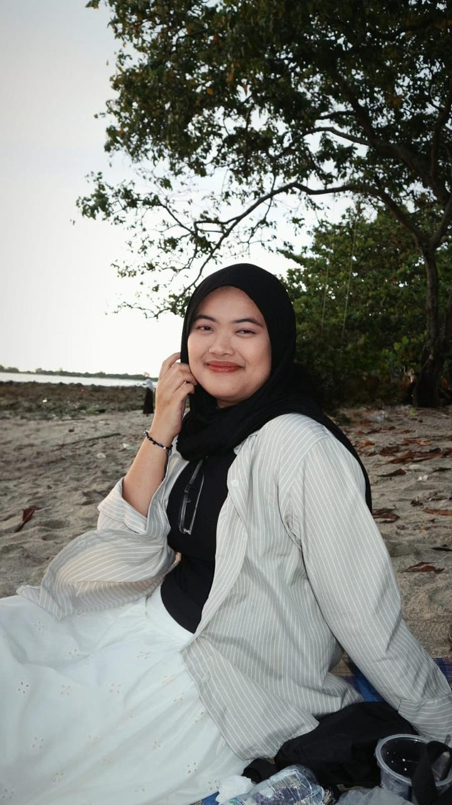
Universitas Multimedia Nusantara Graduate
Fresh from Universitas Multimedia Nusantara with a degree in Communication Science (Strategic Communication). I've spent my college years doing more than studying; I've been actively shaping narratives, managing digital campaigns, and leading meaningful community initiatives.
Communication Science (Strategic Communications)
2021 - 2025 | GPA: 3.68/4.00
Major: Natural Science
2018 - 2021 | GPA: 84.64/100
Corporate Comm Intern
Media monitoring, press releases, content creation, and media relations.
Social Media Admin
Managing content strategy and engagement for publishing accounts.
Social Media Intern
Digital campaign strategist for disaster mitigation in South Lebak.
Public Relations Division
Built relationships with external campus stakeholders and organized student communication events.
Publication & Documentation Division
Designed creative content and documented activities for distribution via social media platforms.
"Nyegah Bala Laut" Documentary
Designed and led a Disaster Mitigation Campaign Program in Situregen Village. Focused on building tsunami awareness through creative media.
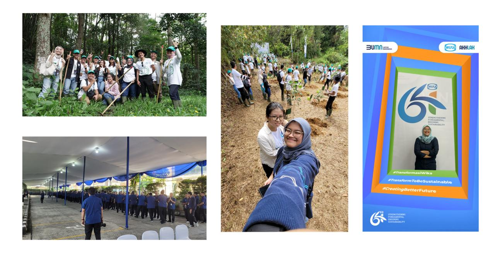
Documentation and layout of work produced during the Corporate Communication Internship, covering press releases and media relations.
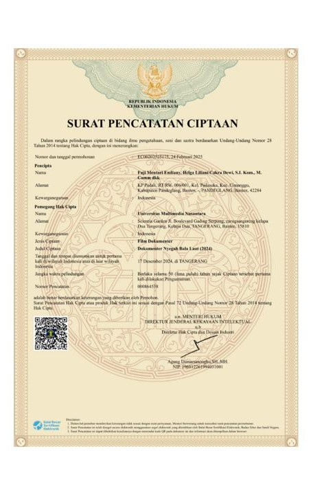
During my MBKM Humanity Project, I designed and led a Disaster Mitigation Campaign Program in Situregen Village, focusing on building community awareness around tsunami risks.
Working closely with the South Lebak Mitigation Task Force and under the support of Universitas Multimedia Nusantara, the program was carried out successfully and left a positive impact on the community.
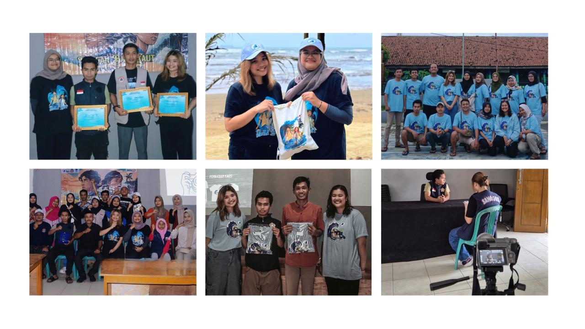
Visual documentation and collaboration highlights during the execution of the MBKM Humanity Project Batch 5 in the fostered partner village.
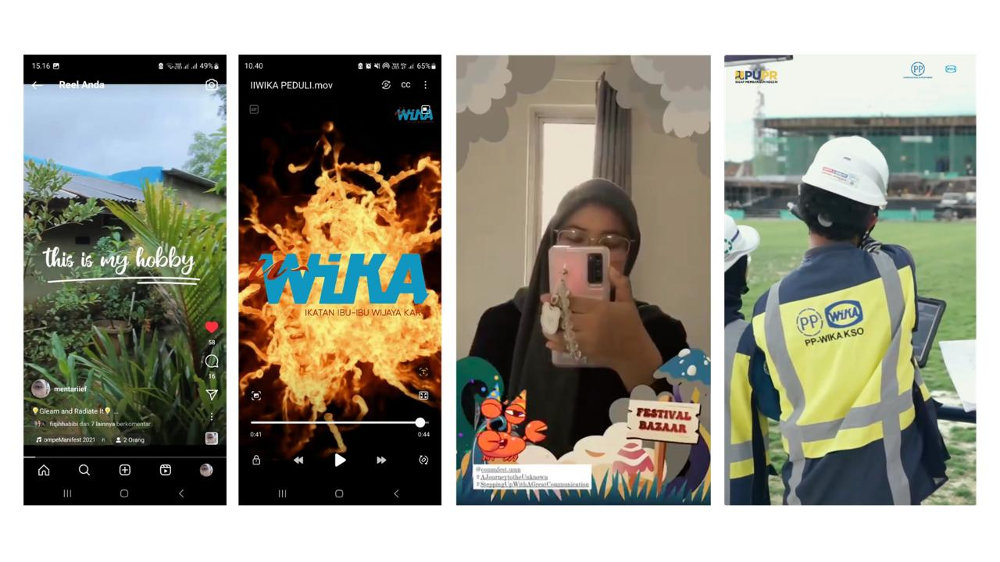
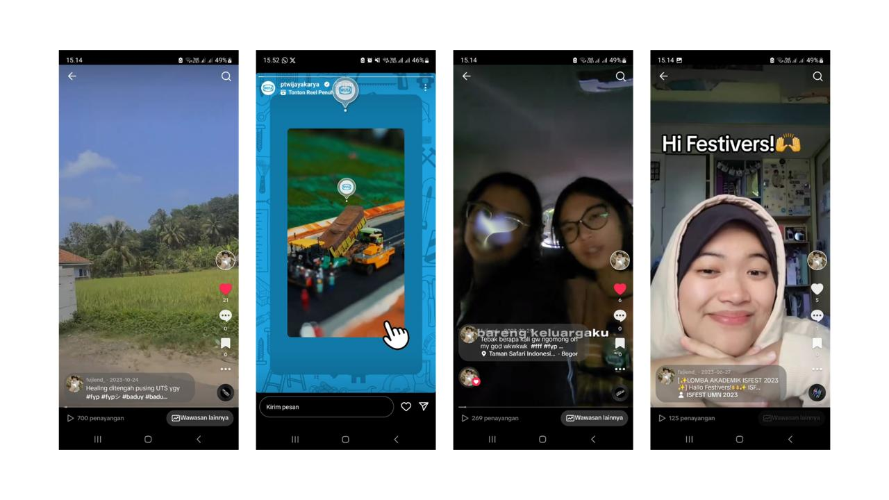
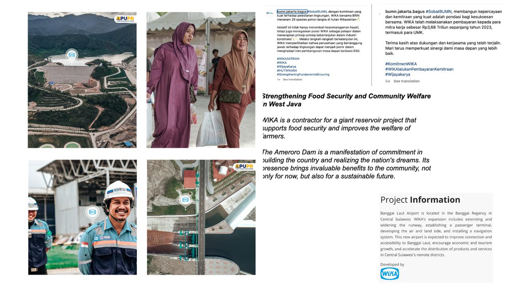
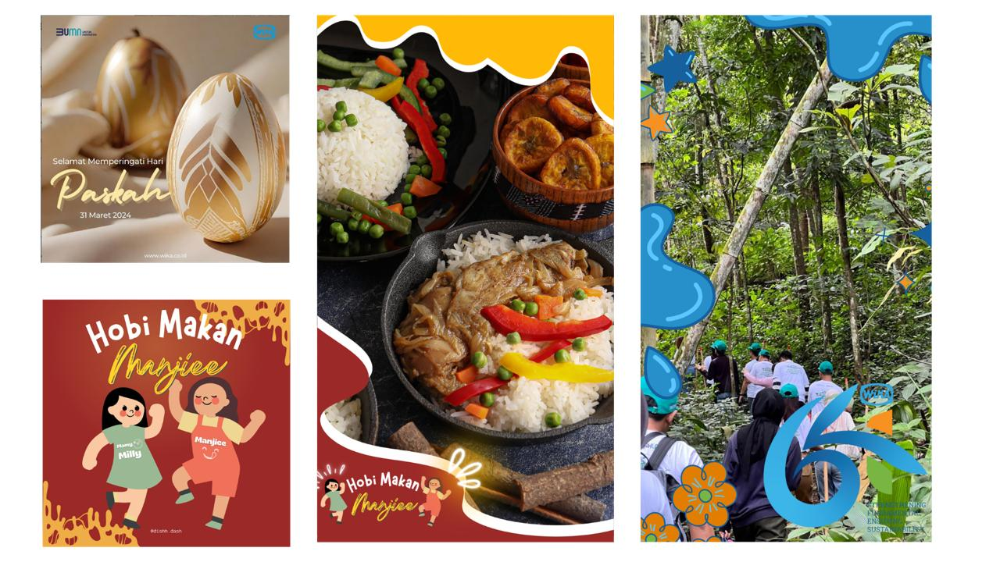
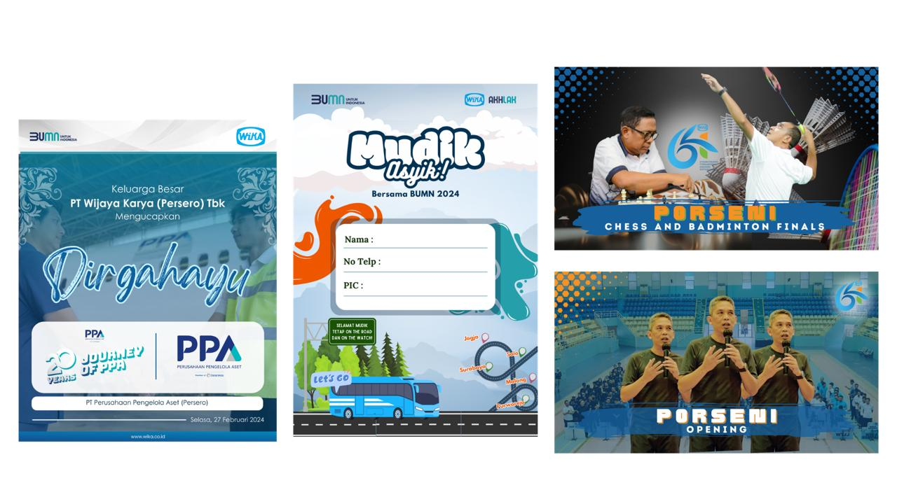
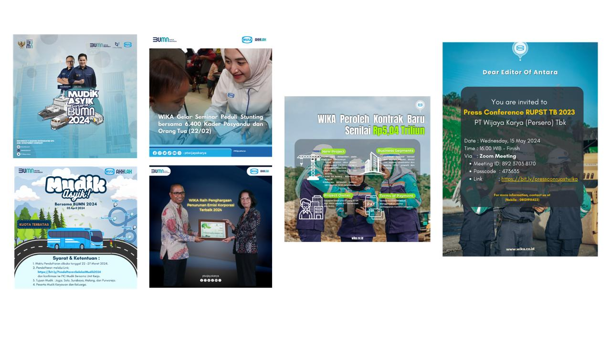
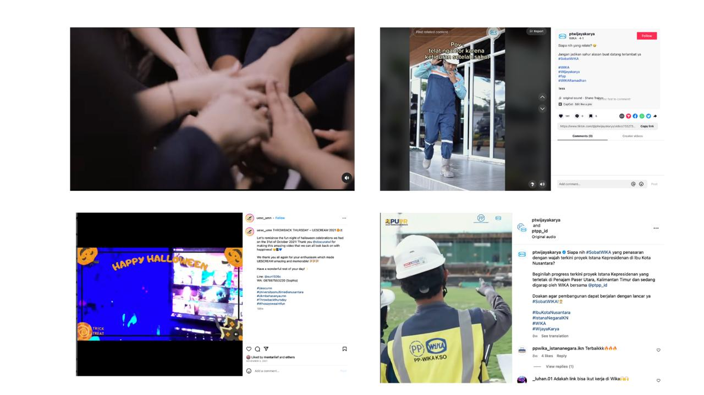
A collection of video editing projects using Premiere Pro, CapCut, and VN for various digital campaign purposes.
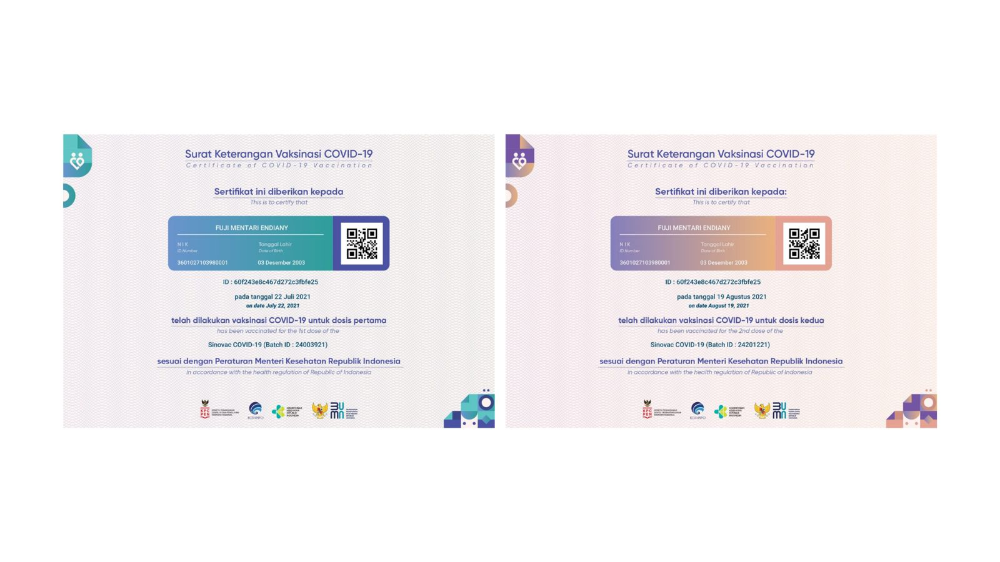
"Bridging communication through creative and impactful visual storytelling."